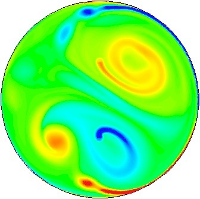
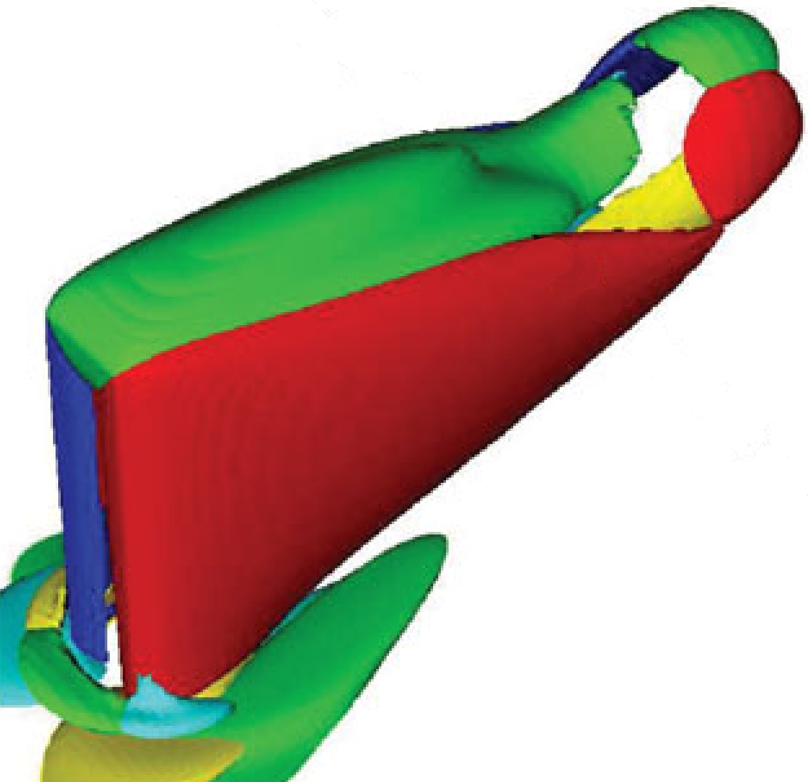
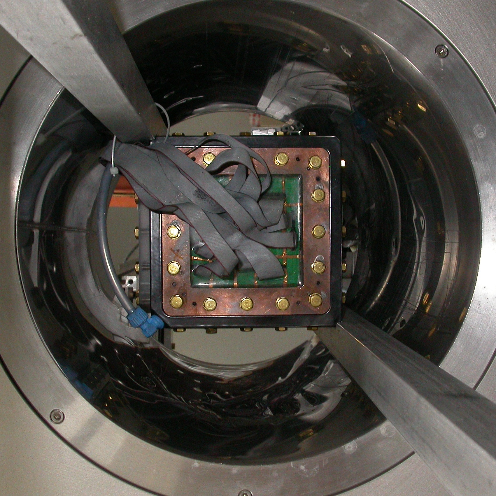

Home
Research
People
Publications
Experiments
Fluid movies
Contact
Alban Pothérat
Professor of Fluid Mechanics
Royal Society Wolfson Research Merit Award Holder
Quasi-2D flows
Separated flows
Anisotropic turbulence



Visitor Map Widget
This template downloaded form
free website templates